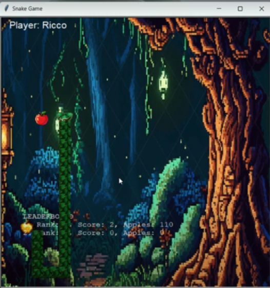

Home
Portfolio
About Me
This is my Portfolio Page!

1.1.9 Build a Bear Project.
The basic idea for this project is: We wanted to make a customizable bear head that can be created using inputs. Certain questions will be asked to put the head together. This Bear comes alive and eventually, other questions will be asked to determine how the bear feels in response to your answer, and it will also show emotions.
Snake Game using Abstraction.

I made a snake game based off the google snake game but this one uses golden apples that are worth more points. I used a leaderboard to keep score on the game and all of the actions. Music also plays when the game is started and the you can continue to feed your snake.
Journey of the Bird on Scratch! .
We made a platformer game on scratch where our Bird is lost and you have to help it get home while avoiding obstacles and eating worms on the way.
2.1.6 Fish Tank.

For this project we debugged data breach issues in a fish tank program.We made the entire program more secure to solve the breaching problems
4.1.4 Understanding Complex Systems.

We explored a river simulation represents how a river can move through erosion. In the simulation the sediment around where the water flows slowly breaks down to small pieces and is moved by the river causing a constant change in the shape of the river. After research of this simulation we evaluated randomness, simplification, and biases in the model.
Using netlogo do remix of illusions.